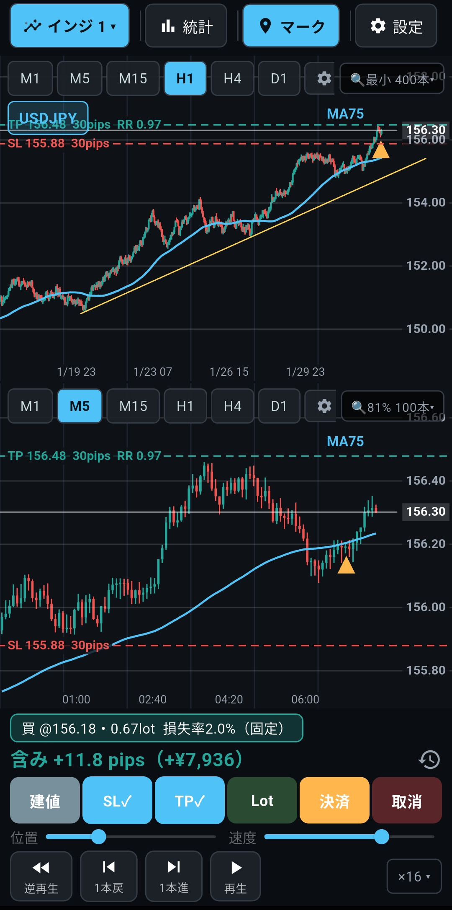
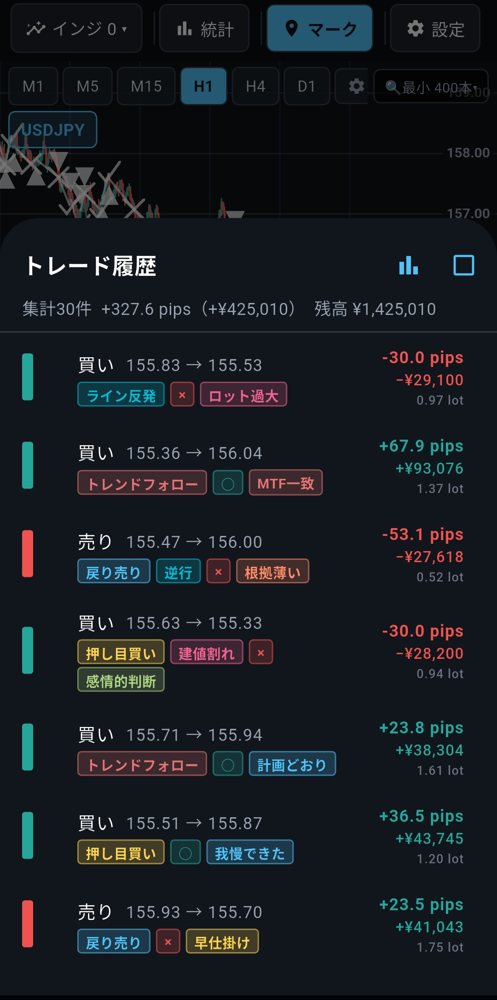
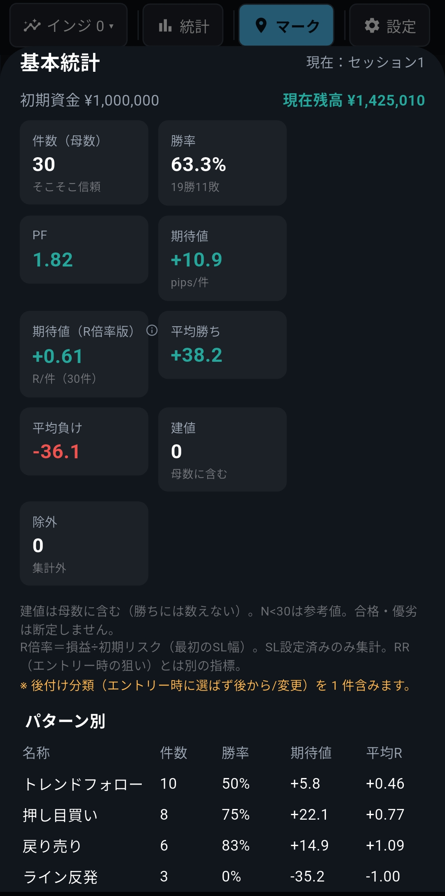
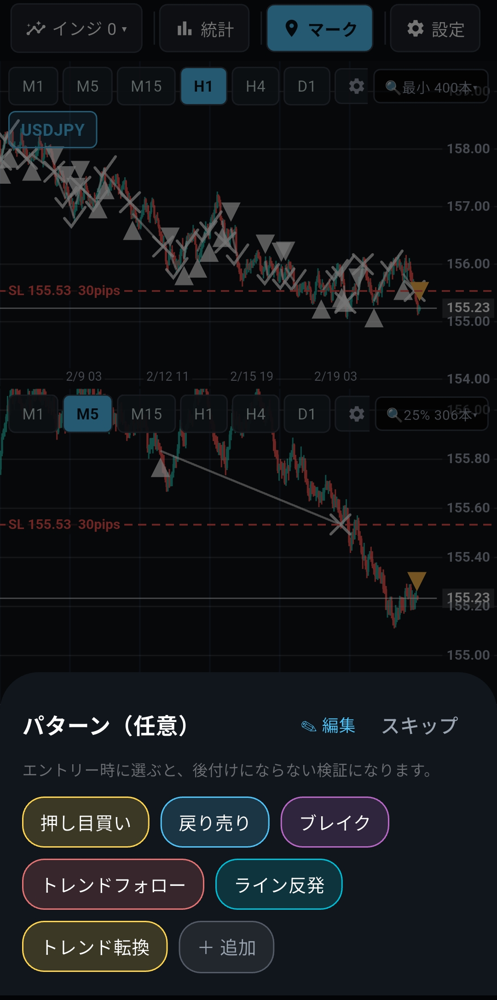
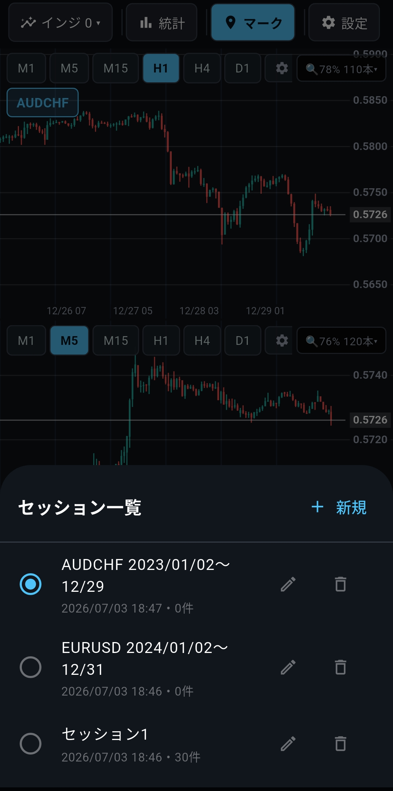
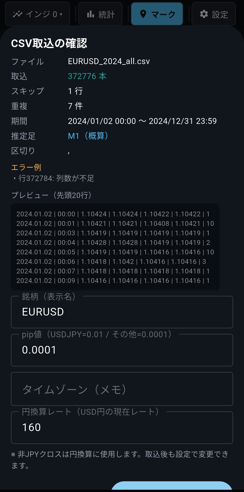

スマホで過去チャートを1本ずつ進めながら、エントリー理由・損切り理由・リスクリワードまで記録できるFX検証アプリ。
先の値動きを見ずに、スキマ時間で自分の判断を検証できます。

PCを開き、チャートを準備し、記録を残す。
その一連の流れが重いと、検証はどうしても後回しになります。
検証を始めても、続かない
最初の数日だけ頑張って、いつの間にかやめている。
記録がノートやスクショに散らかる
あとで見返せず、同じ失敗を繰り返してしまう。
PCを開くのが面倒で、結局やらない
机に向かう時間を、毎日は確保できない。
検証が続かない理由は、やる気だけではありません。
判断・記録・振り返りを続けやすい形になっていなかっただけです。
再生位置より先のローソク足やテクニカル指標の値は表示しません。未来の値動きを見ずに、エントリー判断を練習できます。
あとから「なぜ入ったか」を思い出せる。
パターン・損切り理由・自己評価を、トレードごとに記録。分類は自分の手法に合わせて、自由に編集できます。

感覚ではなく、数字で振り返る。
記録したトレードをもとに、パターン別の件数・勝率・PF（プロフィットファクター）・pips・リスクリワードを確認できます。感覚ではなく、数字で自分の判断傾向を振り返れます。

β版の実機スクリーンショットです。開発中のため、表示は変更される場合があります。



← 左右にスクロールできます →
通勤中に、数本だけローソク足を進める
PCを開かなくても、少しずつ検証を進められます。
気づいた判断を、その場でタグ付けする
エントリー根拠や損切り理由を、忘れる前に記録できます。
週末に、パターン別の傾向を振り返る
どの判断がどんな結果につながったか、記録から確認できます。
検証・記録は、端末内でオフラインでも利用できます
対応OSはAndroidです。
個人開発で作っている、FX検証用のAndroidアプリです。
こだわったのは、「未来が見えない状態で判断すること」と、「あとから検証を振り返れること」です。派手な予測機能ではなく、地道な検証と記録の質を高めるための道具として開発しています。
現在はβ版です。実際に使っていただき、使いにくい点・足りない機能・分かりにくい画面についてフィードバックをいただける方を募集しています。
βテストは無料で参加できます。正式リリース後も、無料プランでは検証セッション2件・総トレード記録30件・バックアップ3回まで利用できます。有料版購入後は、すべての機能を上限なく利用できます。
クローズドβの招待リンクをメールでお送りします。
ご登録ありがとうございます。
で受け付けました（ 登録）。
参加人数が集まり次第、テスト参加のご案内メールを順次お送りします（すぐには届きません。今しばらくお待ちください）。
登録いただくのはメールアドレスのみです。送信をもって利用規約・プライバシーポリシーに同意いただいたものとします。
Androidに対応しています。現在、iOS版はありません。
現在はAndroidを優先して開発しています。iOSは今後検討します。
基本的な検証・記録・集計機能を試せる段階です。ただし、β版のため、不具合や表示・仕様の変更が発生する可能性があります。
βテストは無料で参加できます。正式リリース後も、無料プランでは検証セッション2件・総トレード記録30件・バックアップ3回まで利用できます。有料版購入後は、すべての機能を上限なく利用できます。
同梱していません。お手持ちのヒストリカルデータ（CSV・MT4標準形式）を取り込んでご利用ください。
βテスト参加リンクの受信や、Google Playからのインストールにはネット接続が必要です。インストール後の検証・記録は、オフラインでも利用できます。
ありません。本アプリは過去チャートを使った学習・検証・記録のためのツールです。投資助言、売買推奨、利益保証は行いません。
一般的なチャート分析ツールは、リアルタイムの相場分析に優れています。本アプリは、先の値動きを隠して1本ずつ検証し、エントリー根拠・損切り理由・リスクリワードを記録して振り返ることに特化しています。
1回の勝ち負けではなく、記録を積み重ねて傾向を見る。答えは、次の1本ではなく検証の積み重ねの中にあります。
無料でβテストに参加する登録いただくのはメールアドレスのみです。